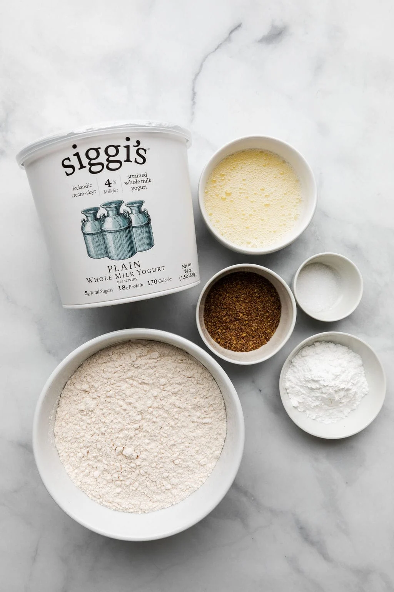
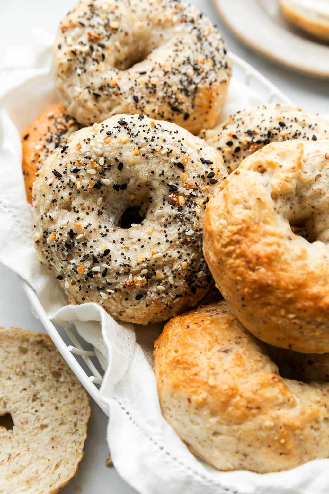
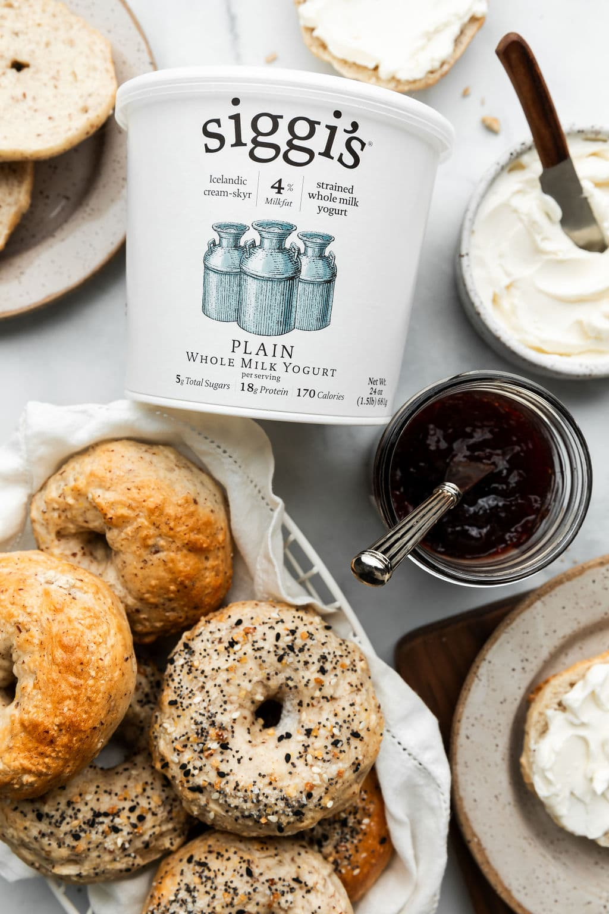

Ingredients
- 2 cups all-purpose flour (240 g) or gluten-free flour blend (296 g)
- 1 tablespoon + 1 teaspoon baking powder
- 2 tablespoons flax meal (ground flaxseed)
- ½ teaspoon fine salt
- 1 cup full-fat plain thick yogurt (we recommend Siggi’s 4% plain whole milk yogurt)
- 1 tablespoon + 2 teaspoons water
- 1 egg white, beaten (for brushing on top before baking)*
Directions
- Preheat the oven to 375°F. Position the top rack in the middle of the oven.
- Line a large baking sheet with parchment paper or a silicone baking mat. Set aside.
- In a medium bowl, combine flour, baking powder, flax meal, and salt. Use a whisk or fork to combine the dry ingredients.
- Add the yogurt and water to the dry ingredients and stir. The dough will be dry and crumbly.**
- Turn the dough and any remaining flour in the bowl onto a clean work surface.
- Turn the dough and any remaining flour in the bowl onto a clean work surface.
- Shape the dough into 8 equal-sized balls.
- Roll each ball into a rope about 6 inches long and ¾-inch thick.
- Connect the two ends of the rope and pinch the ends together to form a bagel shape. Use wet fingers to seal the ends together and smooth any rough edge of the bagel.
- Place the bagels on the lined baking sheet. Brush the tops of the bagels with beaten egg white and sprinkle with Everything Bagel Seasoning.
- Bake for 18-20 minutes on the top rack until bagels are lightly golden brown on the tops and bottoms.